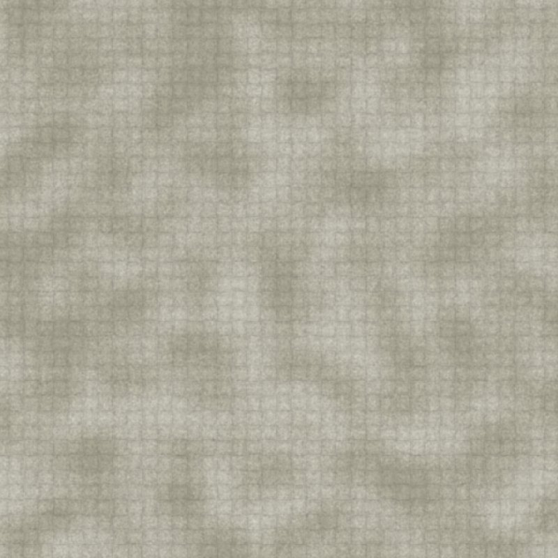
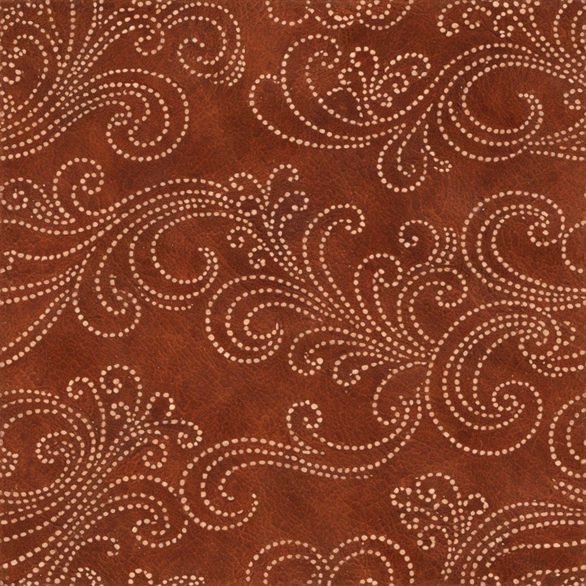
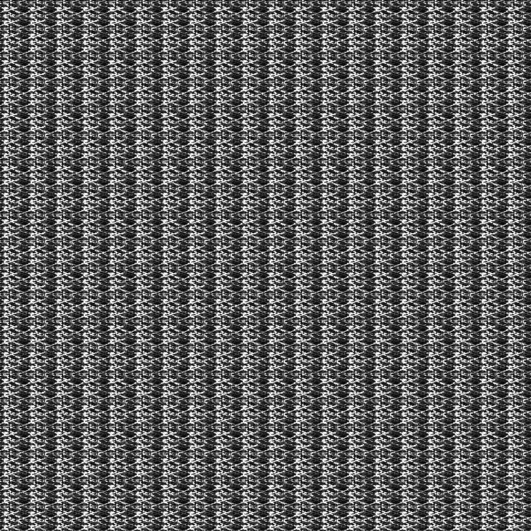

Theoretical research · themes
Conceptual Framework and Creative Direction
Ten themes from my theoretical research. Each one grows into its own page of references, boards and material studies; new themes are added as they form.
- T1
Fabric as sculpture, sculpture as cloth
T1 is variations in material execution, unconventional fabrication and challenging craftsmanship.
- T2
Fashion as conceptual art
Kawakubo, Margiela, authorship, brand as apparatus.
- T3 · selected
Dematerialization vs rematerialization
T3 is the idea of authorship. Regardless of the materiality of the art object, it is what the artist envisions with intention.
- T4
Institutional critique and the apparatus
Institutional critique and the apparatus; links to the apparatus-ownership concept.
- T5
Photography and aura
Benjamin, Stieglitz, Sally Mann, McLuhan.
- T6
Place and nature
This is different from T10.
- T7
Sound, performance, collaboration
Fluxus, Kluver and E.A.T. as a designer-engineer model.
- T8
Asia and postcolonial frame
Japanese designers, kapa.
- T9 · selected
Wear, fragility and the trace of time
T9 focuses on the materialization of wear and tear: the quality of its shape, and how it can represent notions of time and space, like the frequency of light and sound, morphing over time. Wear on leather is the same thing…
- T10 · selected
Restoration, quiet and sensory care
T10 is more human-centric, visceral, and focused on the primitive nature of human perception. Like Lippard said, a slick surface takes longer to read.
T10 Restorer · Visualization
Cloth, form and light
Three Blender studies of one textile idea. Each tests a different thing: distance, soft form, and fall.
 (01) Theme VisualizationWall discs. Three textile-wrapped discs, soft shadows, no frame.
(01) Theme VisualizationWall discs. Three textile-wrapped discs, soft shadows, no frame. (02) Material and ProductTwo soft forms. A bolster and a dome, matte and sheened by the same light.
(02) Material and ProductTwo soft forms. A bolster and a dome, matte and sheened by the same light. (03) Description of design/development processCloth on the floor. A single cloth let fall by simulation.
(03) Description of design/development processCloth on the floor. A single cloth let fall by simulation.How these were made
Built in Blender 5.3 (Cycles). Colors come from the working palette and WGSN FW2028. The weave is a generated texture with slub and heather speckle, a concept-stage stand-in for the fabric, not a scan of a real one. Lighting is one raking soft source and one cool fill, so the texture reads at the edges of each form.
Render and texture settings
The numbers behind the three studies, so any of them can be rebuilt or compared with a real swatch later.
- Engine
- Blender 5.3 Cycles, CPU, denoise on
- Frame
- 1400 x 1750 px, portrait
- Samples
- 120 (discs), 110 (forms), 110 (cloth)
- View transform
- AgX, no look
- Light
- key area light 800 to 900 W, cool fill 120 to 140 W
- Weave texture
- 2048 px seamless, plain weave, 96 cells per tile
- Projection
- box, object coordinates, 0.22 unit tile
- Cloth simulation
- 120 x 120 grid, 90 frames, self-collision on
- Finish
- sheen 0.7 to 0.9, roughness 0.9, bump 0.9
What these studies do not show
A screen cannot show touch. T10 is about what a surface does to the hand, so these images can only suggest the value shifts and the grain, not the hand feel itself.
The colors are approximate. Blender's view transform moves each color from its library value, so a swatch here will not match its hex code exactly. Matching against a physical or measured sample is still to do.
The weave is generated, and the AI-made knit and leather maps are not evidence about a real fabric until a swatch is made and photographed under the same light.
Digital assets
Generated weave texture
A seamless plain-weave color and height pair with slub variation and heather speckle, generated in Python from filtered noise. It is wrapped on every form in studies 01 to 03 with box projection.

A stand-in for the fabric, not a scan of a real one.
Use: Swap in a scanned swatch once one is chosen.
AI-made knit maps into a Blender swatch
Vizcom generated a set of maps for a knit with a repeatable yarn pattern: albedo, height, normal and roughness. A cleaned height map and a seamless tile are set up in a 12 inch Blender swatch scene.

The latest render is overexposed and the knit structure reads only faintly, so it is not a usable swatch yet.
Use: Lower the light, use the gray tile, strengthen the relief, render again.
AI-made leather maps
A leather-with-stitching map set from Vizcom, with original, albedo, height, normal, roughness and metallic maps. It is a quick way to see a stitched surface before any real sample exists.

The pattern is the AI's, not mine; it is a look test only.
Use: Check it against a real leather swatch once one exists.
Warp-knit repeat to fabric swatch
A unit made from lapping-bar paths, tiled into a swatch and finished in gray and color. Construction comes first and sets the texture and hand; color is a later layer.

A simulation, not a scan. Accuracy is not the goal, a good design is.
Use: Feed the chosen construction into the Blender swatch scene.

Material study · 3D render
Same cloth.
New signal.
One object, front on, on a single saturated ground. A rendered swatch is how a color or a second material is shown before it is sampled.
Ripstop swatch · 10 × 10 cm · 3D render
See the study behind itRequest access
See the full work.
Case studies, material data and process files are shared on request.
Request access